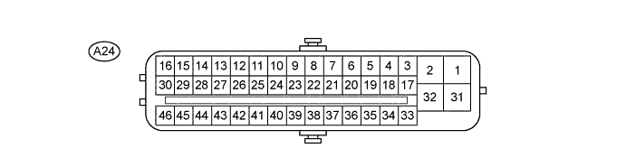
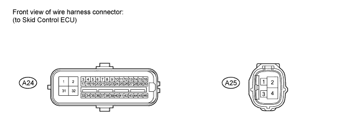

ANTI-LOCK BRAKE SYSTEM > TERMINALS OF ECU |
| TERMINALS OF ECU |

| Terminal No. (Symbol) | Terminal Description |
| A24-1 (GND1) | Skid control ECU ground |
| A24-2 (+BM1) | Power supply for motor |
| A24-3 (FR+) | Front speed sensor RH power supply output |
| A24-4 (FL-) | Front speed sensor LH input |
| A24-5 (RR+) | Rear speed sensor RH power supply output |
| A24-6 (RL-) | Rear speed sensor LH input |
| A24-7 (STP) | Stop light switch |
| A24-11 (CANH) | CAN communication terminal H |
| A24-12 (SP1) | Speedometer signal |
| A24-13 (D/G) | Diagnosis tester serial communication |
| A24-16 (STP0) | Stop light operation relay |
| A24-17 (FR-) | Front speed sensor RH input |
| A24-18 (FL+) | Front speed sensor LH power supply output |
| A24-19 (RR-) | Rear speed sensor RH input |
| A24-20 (RL+) | Rear speed sensor LH power supply output |
| A24-22 (VGS) | G sensor power supply output |
| A24-23 (GGND) | G sensor ground |
| A24-24 (TS) | Sensor test terminal (Signal check switch) |
| A24-25 (CANL) | CAN communication terminal L |
| A24-26 (EXI3) | Rear differential lock detection switch |
| A24-27 (EXI) | Center differential lock switch |
| A24-28 (PKB) | Parking brake input |
| A24-30 (BZ) | Skid control buzzer |
| A24-31 (+BS) | Power supply for solenoid |
| A24-32 (GND2) | Skid control ECU ground |
| A24-39 (GL1) | G sensor input |
| A24-41 (LBL) | Brake fluid level warning switch |
| A24-42 (WFSE) | Write flash enable input |
| A24-45 (STP2) | Stop light switch |
| A24-46 (IG1) | IG1 power supply |
| Terminal No. (Symbol) | Terminal Description |
| A25-1 (IG2) | IG2 power supply |
| A25-2 (+BM2) | Power supply for motor |
| A25-4 (GND3) | Skid control ECU ground |
| TERMINAL INSPECTION |

| Terminal No. (Symbol) | Wiring Color | Terminal Description | Condition | Specified Condition |
| A24-2 (+BM1) - Body ground | B | Power supply for motor (From battery) | Always | 11 to 14 V |
| A24-16 (STP0) - Body ground | R-Y | Stop light operation relay | Engine switch off → on (IG) | Below 1 V → 11 to 14 V |
| A24-28 (PKB) - Body ground | Y-R | Parking brake input | Parking brake switch on → off (Parking brake lever pulled → released) | Below 1 Ω → 10 kΩ or higher |
| A24-31 (+BS) - Body ground | W | Power supply for solenoid (From battery) | Always | 11 to 14 V |
| A24-41 (LBL) - Body ground | BR-Y | Brake fluid level warning switch | Brake fluid level +/- 5 mm (+/- 0.197 in.) from the minimum level → maximum level | Below 1 Ω → 1.9 to 2.1 kΩ |
| A24-45 (STP2) - Body ground | R | Stop light switch | Stop light switch on → off (Brake pedal depressed → released) | 8 to 14 V → Below 1.5 V |
| A24-46 (IG1) - Body ground | G | IG1 power supply | Engine switch off → on (IG) | Below 1 V → 11 to 14 V |
| A25-1 (IG2) - Body ground | B | IG2 power supply | Engine switch off → on (IG) | Below 1 V → 11 to 14 V |
| A25-2 (+BM2) - Body ground | B | Power supply for motor (From battery) | Always | 11 to 14 V |
| A24-1 (GND1) - Body ground | W-B | Ground | Always | Below 1 Ω |
| A24-32 (GND2) - Body ground | W-B | Ground | Always | Below 1 Ω |
| A25-4 (GND3) - Body ground | W-B | Ground | Always | Below 1 Ω |